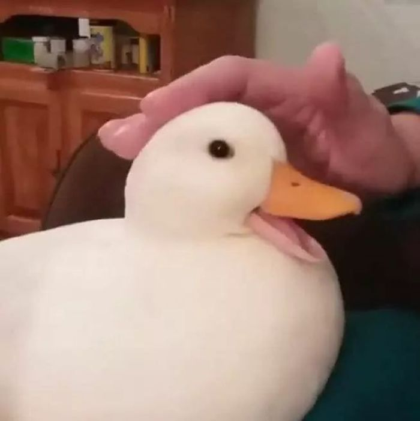
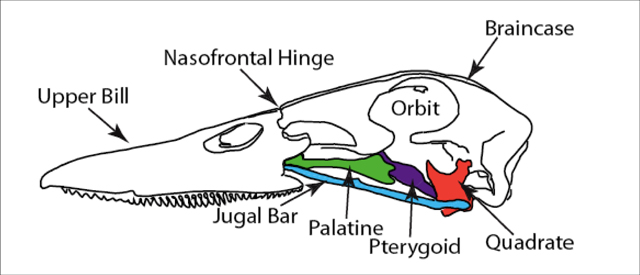

Did you know that ducks, can't smile?
This sweet duck, has a big grand smile... Or not,
Why not? Ducks cannot smile sadly enough, why cant these little cuties smile? Because they do not have the same facial muscles as other animals, or like us- however, ducks can make expressions that appear to be smiles! Let's get together here to know how ducks can show happiness, and show us how they do have a big warm smile underneath their big hard beaks!
Ducks, and Smiling.
Ducks beaks are their mouths, these beaks are hard and do not carry the same structure as human mouths, though they can make their faces big and wide! Like the photo above us. This, makes it look like a sweet little smile, as well ducks are widely known for being able to wag their tails- they can do this to indicate they're pleased, or while they're swimming they do so as well.
Duck, Duck, friends.
Ducks, can be friends with other animals, most commonly we see ducks befriending turkeys, chickens, and dogs. Ducks and turkets can be the best of friends however, with ducks being protective of their turkey friends. Dogs, love watching ducks, though it is incredibly important to remember- if you're going to have these guys nearby eachother, to make sure to consider their needs if your keeping them as pets.